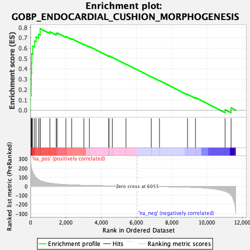
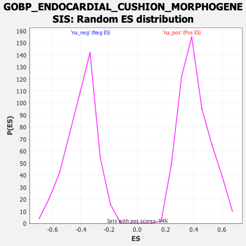

| | | Dataset | DE_genes |
| Phenotype | NoPhenotypeAvailable |
| Upregulated in class | na_pos |
| GeneSet | GOBP_ENDOCARDIAL_CUSHION_MORPHOGENESIS |
| Enrichment Score (ES) | 0.7866134 |
| Normalized Enrichment Score (NES) | 1.9325103 |
| Nominal p-value | 0.0 |
| FDR q-value | 0.0021196844 |
| FWER p-Value | 0.034 |
Table: GSEA Results Summary

Fig 1: Enrichment plot: GOBP_ENDOCARDIAL_CUSHION_MORPHOGENESIS
Profile of the Running ES Score & Positions of GeneSet Members on the Rank Ordered List
| SYMBOL | RANK IN GENE LIST | RANK METRIC SCORE | RUNNING ES | CORE ENRICHMENT | | 1 | TBX3 | 2 | 291.980 | 0.1441 | Yes |
| 2 | SNAI2 | 35 | 225.456 | 0.2528 | Yes |
| 3 | TGFBR2 | 42 | 215.820 | 0.3590 | Yes |
| 4 | TGFB3 | 64 | 193.920 | 0.4530 | Yes |
| 5 | NOTCH1 | 75 | 187.352 | 0.5447 | Yes |
| 6 | ROBO1 | 127 | 158.325 | 0.6186 | Yes |
| 7 | BMP2 | 231 | 117.975 | 0.6680 | Yes |
| 8 | TGFB1 | 315 | 95.879 | 0.7083 | Yes |
| 9 | HEY1 | 459 | 73.231 | 0.7321 | Yes |
| 10 | SNAI1 | 547 | 62.736 | 0.7557 | Yes |
| 11 | SOX9 | 548 | 62.648 | 0.7866 | Yes |
| 12 | ACVR1 | 1100 | 33.919 | 0.7559 | No |
| 13 | HEYL | 1455 | 25.510 | 0.7380 | No |
| 14 | MSX1 | 1507 | 24.580 | 0.7458 | No |
| 15 | TWIST1 | 2007 | 17.906 | 0.7117 | No |
| 16 | TMEM100 | 2338 | 14.901 | 0.6906 | No |
| 17 | ROBO2 | 3027 | 10.188 | 0.6364 | No |
| 18 | TBX2 | 3339 | 8.788 | 0.6139 | No |
| 19 | MDM4 | 4435 | 5.158 | 0.5221 | No |
| 20 | RBPJ | 4450 | 5.117 | 0.5235 | No |
| 21 | SMAD4 | 4639 | 4.685 | 0.5096 | No |
| 22 | TBX20 | 5413 | 3.102 | 0.4445 | No |
| 23 | MSX2 | 6844 | -3.469 | 0.3231 | No |
| 24 | ACVRL1 | 7314 | -4.326 | 0.2848 | No |
| 25 | ISL1 | 8903 | -9.905 | 0.1529 | No |
| 26 | NOG | 9355 | -13.063 | 0.1205 | No |
| 27 | MDM2 | 11032 | -55.473 | 0.0036 | No |
| 28 | TGFB2 | 11372 | -97.890 | 0.0227 | No |
Table: GSEA details [plain text format]

Fig 2: GOBP_ENDOCARDIAL_CUSHION_MORPHOGENESIS: Random ES distribution
Gene set null distribution of ES for GOBP_ENDOCARDIAL_CUSHION_MORPHOGENESIS